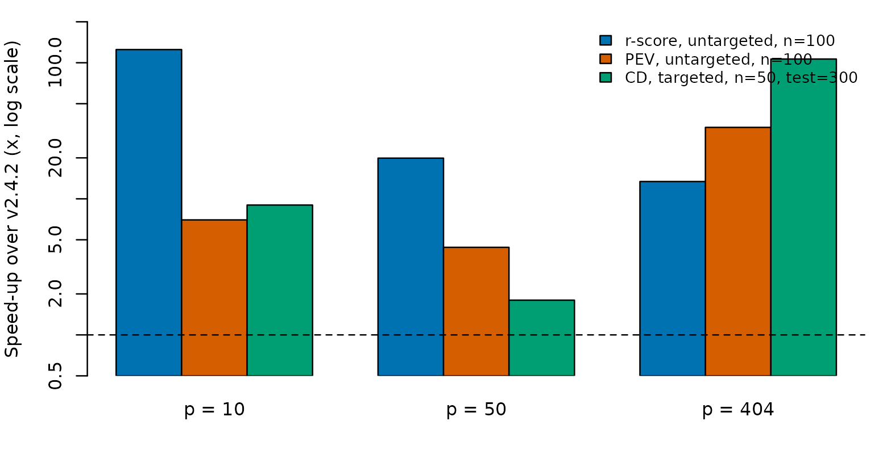

Short answer
Nothing in your scripts has to change. Every function of v2.4.2 is still exported with the same name and the same arguments, and it returns the same kind of object. The method is the one published in Ou & Liao (2019). v3 is faster, fixes a few bugs, and adds a seed argument.
Entry points
| Function | v2.4.2 | v3 |
|---|---|---|
optTrain(geno, cand, n.train, subpop, test, method, min.iter, console) |
yes | same, plus seed; the result has n.iter and
converged in addition to OPTtrain,
TOPscore, ITERscore
|
r_score(X, X0), pev_score(X, X0),
cd_score(X, X0)
|
yes | same, in double precision |
SSDFGS(geno, nt, n_iter, multi.threads) |
yes | same; figures need the optional ggplot2 package |
FGCM(...), nt2r(...)
|
yes | same |
geno, subpop
|
yes | same |
What you may notice
Speed. See the table below.
Scores are double precision. v2.4.2 returned
float, so its numbers had about 7 digits. Values agree to that accuracy.-
Near-ties can resolve differently. A search accepts a move only if the score improves. Two sets whose scores differ in the eighth digit were a tie in v2 and are not in v3, so the same seed can return a different, equally good set. To reproduce v2.4.2 exactly, for example to rerun a published analysis, use
options(TSDFGS.legacy_float = TRUE)With this option and the same seed,
optTrain()returns the training sets recorded from v2.4.2 for all twelve routes. The option is slower than the default. Small
min.iterworks. v2.4.2 stopped with “the condition has length > 1” whenmin.iterwas below5 * sqrt(length(cand) * n.train).Clearer error messages. Missing values,
n.trainlarger than the candidate pool, and row numbers outsidegenogive clear errors.candneed not be1:nrow(geno)withsubpopand notest.Figures.
SSDFGS()uses the Okabe-Ito colors, and its figures areNULL(with a message) if ggplot2 is not installed. The numbers are returned either way.Fewer dependencies.
dplyr,ggplot2, andlatex2expare no longer imported.
What is kept as published
The r-score code of v2.4.2 multiplies the test set by
1 - 1/n0 where a centering matrix may be intended. v3 keeps
this so that your results do not move.
Speed
Seconds per 1,000 iterations of optTrain() on the rice
PCs, one thread, same seed and same number of iterations for both
versions (bench/bench_speed.R, run in the Apptainer image
on one core of a server).
b <- read.delim("data/bench_speed.tsv", check.names = FALSE)
b$ms_per_iter <- round(b$ms_per_iter, 2)
wide <- reshape(b[, c("p", "case", "version", "ms_per_iter")], idvar = c("p", "case"),
timevar = "version", direction = "wide")
names(wide) <- sub("ms_per_iter.", "ms per iteration, ", names(wide))
wide$speedup <- round(wide[["ms per iteration, old"]] / wide[["ms per iteration, new"]], 1)
names(wide)[names(wide) == "p"] <- "PCs (p)"
rownames(wide) <- NULL
knitr::kable(wide, col.names = c("PCs (p)", "Case", "v2.4.2 (ms/iteration)", "v3 (ms/iteration)", "Speed-up (x)"))| PCs (p) | Case | v2.4.2 (ms/iteration) | v3 (ms/iteration) | Speed-up (x) |
|---|---|---|---|---|
| 10 | r-score, untargeted, n=100 | 1.25 | 0.01 | 125.0 |
| 10 | PEV, untargeted, n=100 | 0.07 | 0.01 | 7.0 |
| 10 | CD, targeted, n=50, test=300 | 0.09 | 0.01 | 9.0 |
| 50 | r-score, untargeted, n=100 | 2.79 | 0.14 | 19.9 |
| 50 | PEV, untargeted, n=100 | 0.35 | 0.08 | 4.4 |
| 50 | CD, targeted, n=50, test=300 | 0.41 | 0.23 | 1.8 |
| 404 | r-score, untargeted, n=100 | 17.70 | 1.32 | 13.4 |
| 404 | PEV, untargeted, n=100 | 27.82 | 0.83 | 33.5 |
| 404 | CD, targeted, n=50, test=300 | 26.62 | 0.25 | 106.5 |
cols <- c("#0072B2", "#D55E00", "#009E73")
cases <- unique(wide$case)
ps <- sort(unique(wide[["PCs (p)"]]))
m <- sapply(cases, function(cs) sapply(ps, function(p) wide$speedup[wide$case == cs & wide[["PCs (p)"]] == p]))
rownames(m) <- paste0("p = ", ps)
op <- par(mar = c(4, 4, 1, 1), cex = 0.8)
bp <- barplot(t(m), beside = TRUE, log = "y", col = cols, ylim = c(0.5, max(m) * 1.6),
ylab = "Speed-up over v2.4.2 (x, log scale)", xpd = FALSE)
abline(h = 1, lty = 2)
legend("topright", legend = cases, fill = cols, bty = "n", cex = 0.85)
par(op)A speed-up below 1 would mean v3 is slower; the dashed line marks 1.
Install
# v3 (CRAN)
install.packages("TSDFGS")
# v2.4.2, for exact old behavior without the option above
remotes::install_version("TSDFGS", "2.4.2")